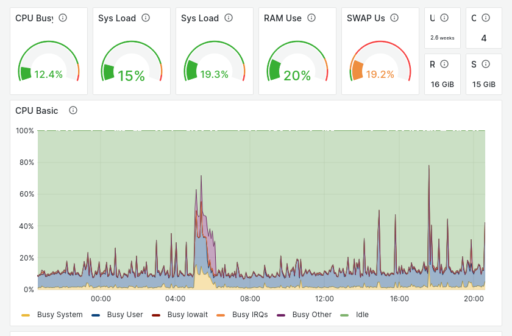

Tableau de bord#

Le serveur CLUB1 dispose d’un tableau de bord accessible aux membres à l’adresse : https://dashboard.club1.fr. Il s’agit d’une instance de Prometheus+Grafana, connectée à l’annuaire LDAP.
Logiciels#
- Prometheus#
Base de données de séries temporelles principalement pensée pour la surveillance de serveurs.
Prometheus se charge de récolter des informations à intervalles réguliers sur les différents composants que l’on souhaite surveiller. Il garde un historique de ces données (15 jours chez CLUB1) et permet de les récupérer à l’aide de requêtes. — Wikipedia, Sources
- Grafana#
Logiciel de tableau de bord Web permettant d’afficher des statistiques et des graphiques et d’envoyer des alertes à partir d’une base de données de séries temporelles.
Il est capable de se connecter à différentes sources de données, dont la plus courante, Prometheus est aussi celle utilisée chez CLUB1. — Wikipedia, Sources